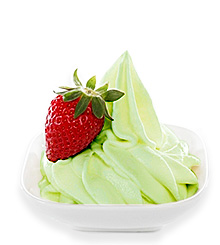
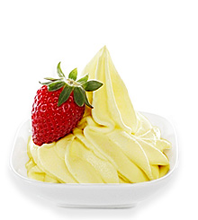
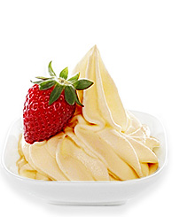
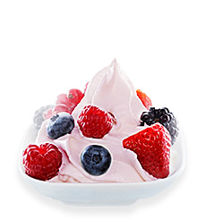
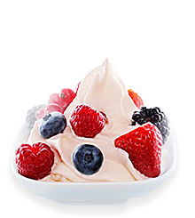
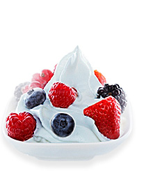
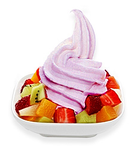
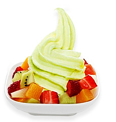
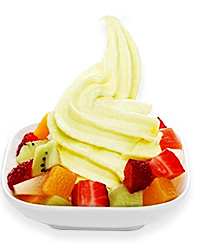

Sản Phẩm Truyền Thống

Sữa Chua Vị Kiwi
Hương vị thơm ngon của trái Kiwi xanh, nổi tiếng của đất nước New Zealand có trong Sữa chua vị Kiwi xanh đem đến một món ăn nhẹ Siêu ngon và tốt cho hệ tiêu hóa. Xem chi tiết
Số lượng:
Sữa Chua Vị Xoài
Sữa chua xoài thích hợp cho mọi lứa tuổi, vì vậy hãy để cả gia đình quây quần bên nhau cùng thưởng thức món ăn thơm ngon, bổ dưỡng này. Xem chi tiết
Số lượng:
Sữa Chua Vị Dưa Lưới
Trong dưa lưới chứa rất nhiều vitamin C có tác dụng làm đẹp da hiệu quả. Phụ nữ ăn sinh tố dưa lưới thường xuyên sẽ có làn da mịn màng. Xem chi tiết
Số lượng:Sản Phẩm Mới

Sữa Chua Vị Mâm Xôi
Quả mâm xôi là loại quả ăn họ hoa hồng, có nguồn gốc từ châu Âu, Bắc Á và được trồng ở các vùng ôn đới trên toàn thế giới. Có nhiều loại, bao gồm đen, tím và vàng. Xem chi tiết
Số lượng:
Sữa Chua Vị Việt Quất
Quả việt quất chứa các dưỡng chất tốt cho sức khỏe như chất xơ, kali, folate, vitamin C và vitamin B6 (những chất hỗ trợ rất tốt cho sức khỏe của tim). Xem chi tiết
Số lượng:
Sữa Chua Vị Dâu Tây
Dâu tây là một loài cây thân thảo có thân ngắn và các chiếc lá mọc gần với nhau. Lá có nhiều gai, bề mặt lá có nhiều lông tơ và kích thước lá có thể khác nhau ở từng giống. Xem chi tiết
Số lượng:Sản Phẩm Trái Cây

Sữa Chua Vị Bưởi
Bưởi là một loại quả thuộc chi Cam chanh có nguồn gốc từ Đông Nam Á. Bưởi tiếng Anh gọi là Pomelo, tuy nhiên nhiều từ điển ở Việt Nam lại dịch thành grapefruit. Xem chi tiết
Số lượng:
Sữa Chua Vị Táo Xanh
Táo xanh có hàm lượng chất xơ cao giúp tăng cường quá trình trao đổi chất của cơ thể. Bên cạnh đó, chất xơ còn giúp quá trình giải độc gan và hệ tiêu hóa. Xem chi tiết
Số lượng:
Sữa Chua Vị Dứa
Dứa có các tên gọi khác như là khóm, thơm, khớm, gai hoặc huyền nương. Đây là một loại quả nhiệt đới. Dứa là cây bản địa của các nước Nam Mỹ. Xem chi tiết
Số lượng: